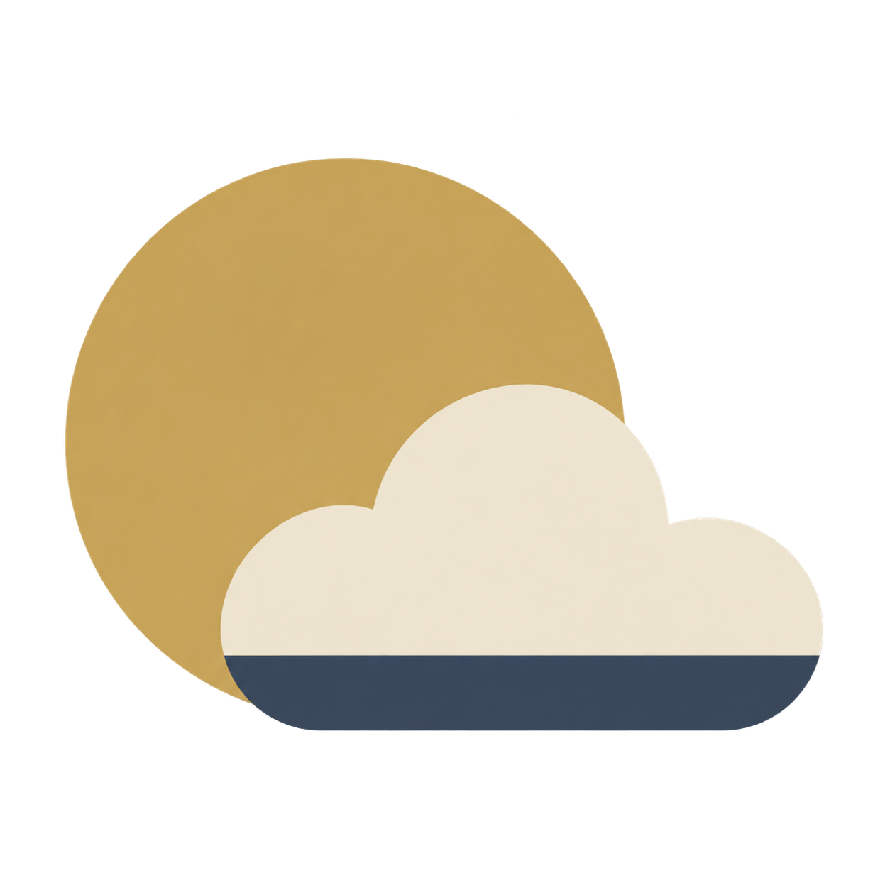

Waking Above the Clouds · Visual identity
Simpler sky symbols.
Eight simple directions in cream, antique gold and slate blue. Flat color, clear silhouettes, and previews at the size that matters.
Simple favicon studies
01 — 08
01 — 08

Previewing 02 · Dawn
Dawn (02) is now the game favicon. Previewing other options changes this review tab only.